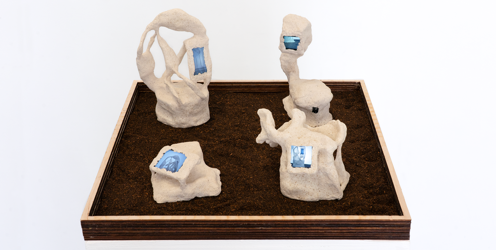
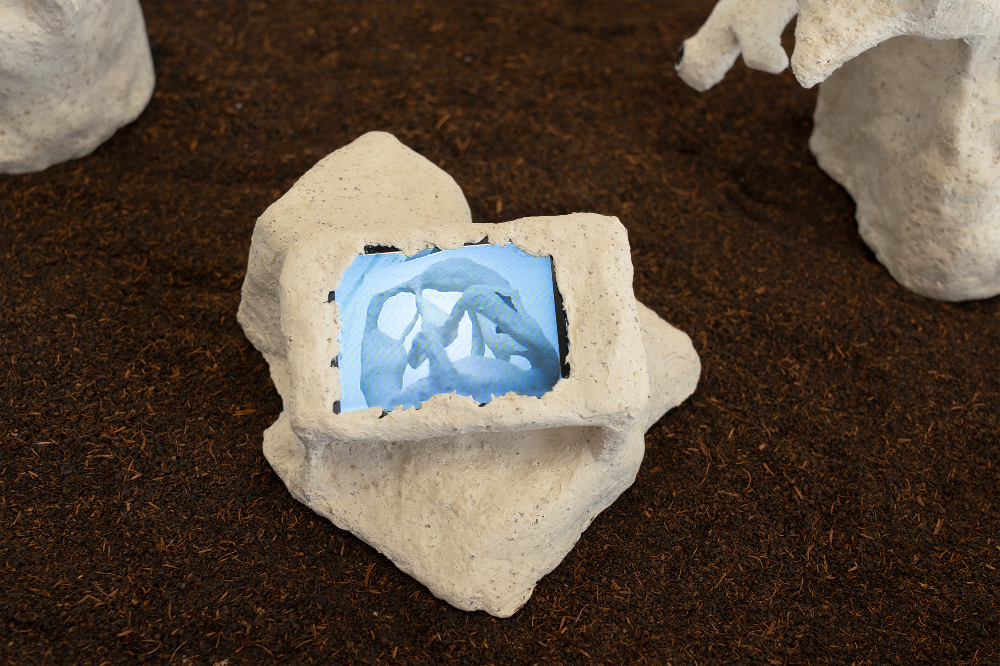
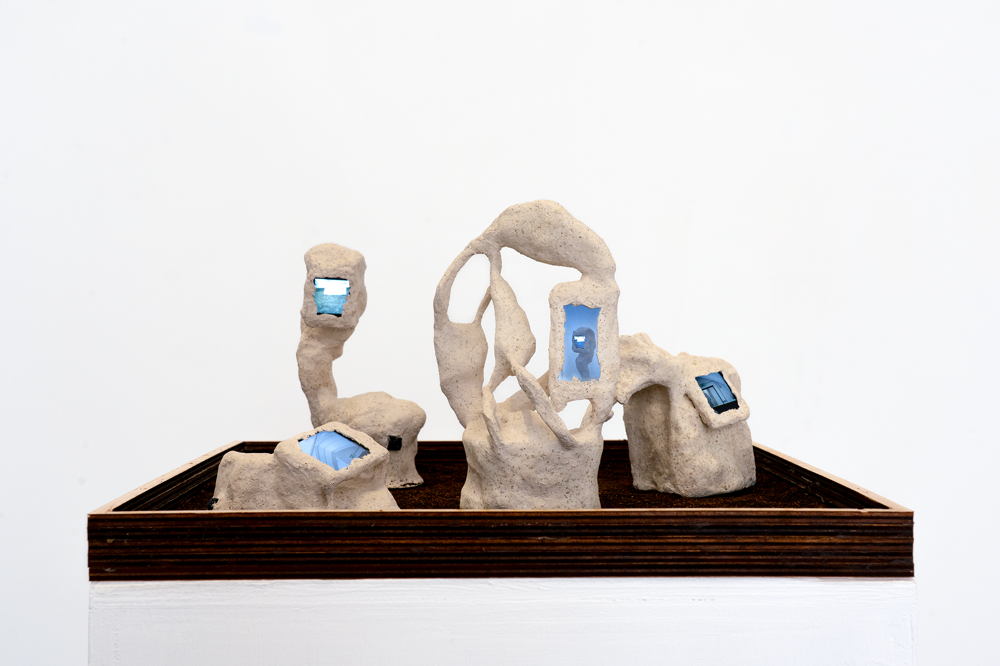
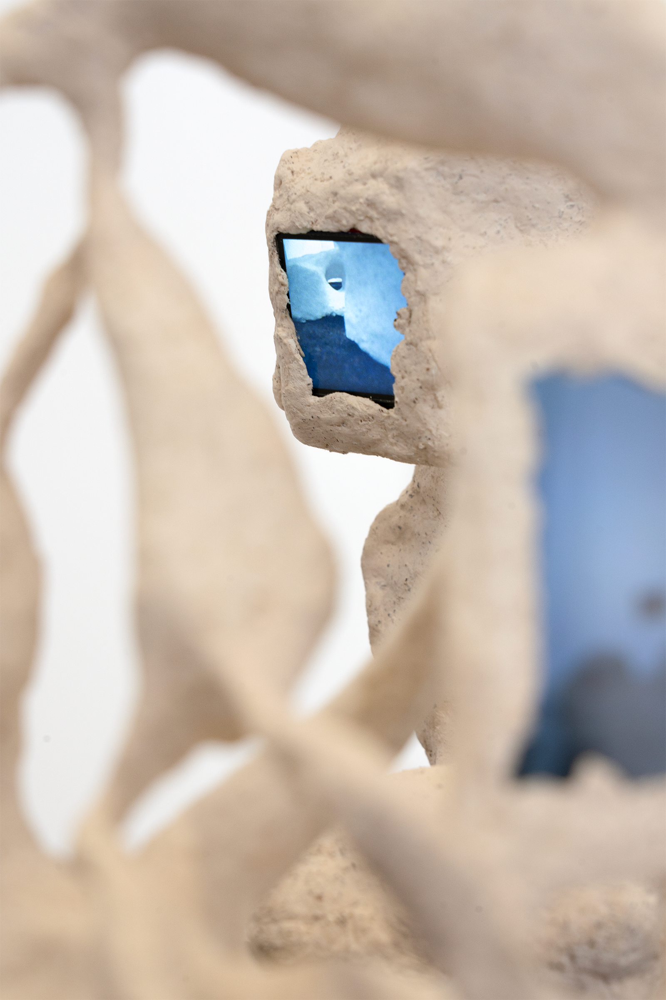
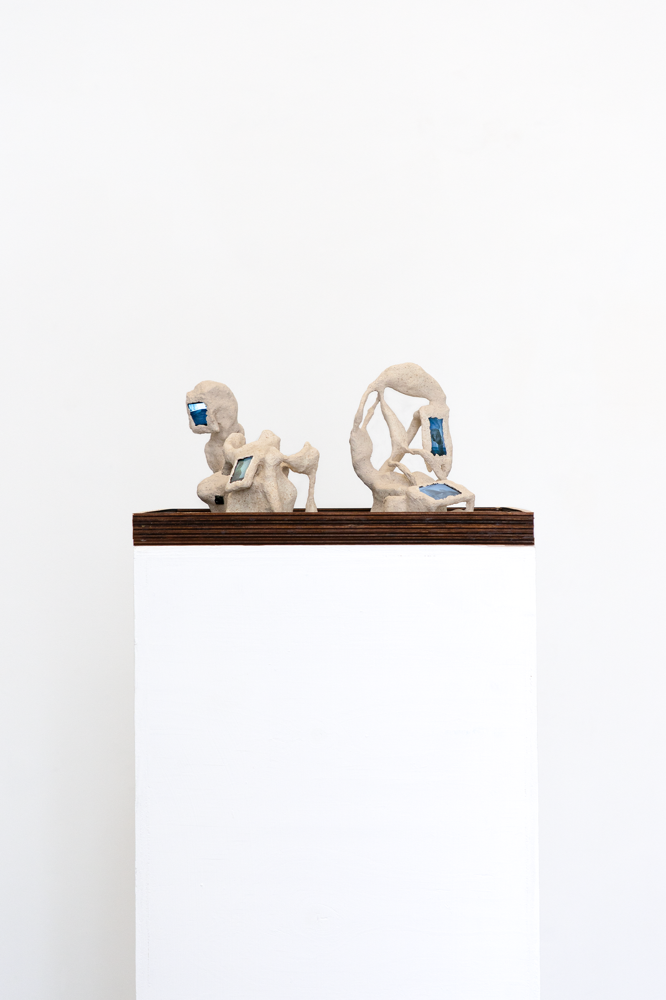
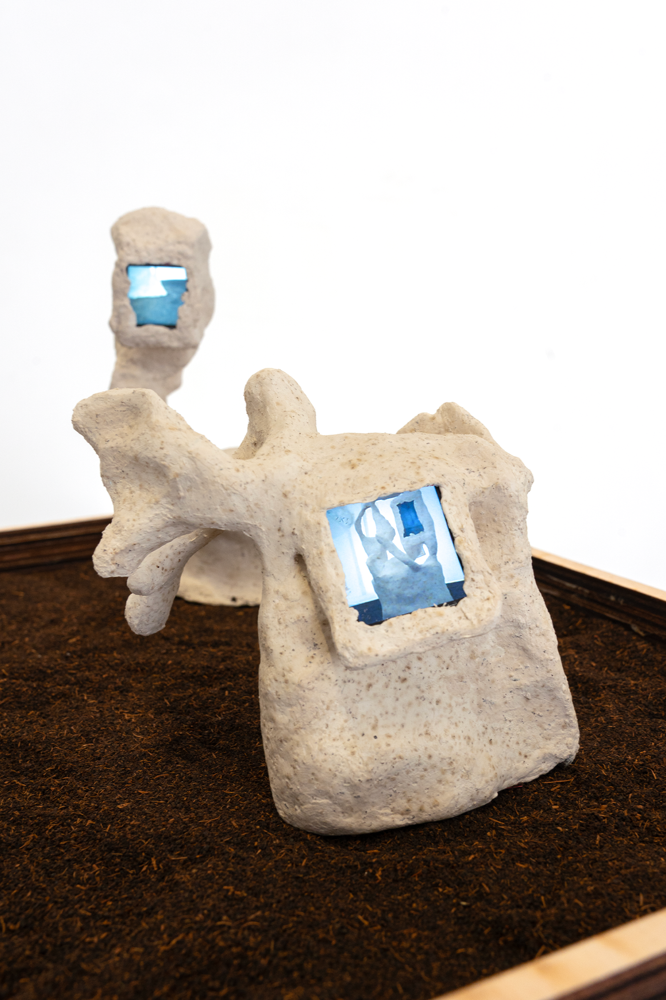
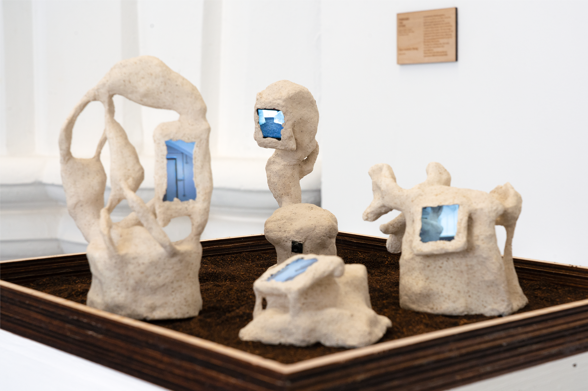

Through the Stone
In traditional Chinese gardens, ornamental stones are often placed to guide the gaze and enrich the atmosphere. Inspired by this practice, I created these stones, each embedding a camera and a screen. The live image captured by the camera becomes part of the stone's own hollow form, reflecting the surrounding environment as well as the stones themselves.
Through this shifting view, the work invites both observation and self-reflection.





